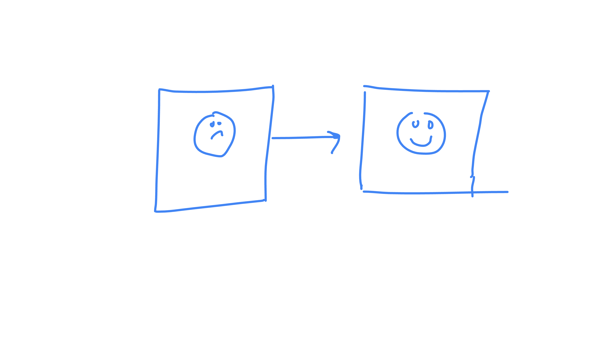

Attendance
Present:
- River Patel
- Jamie Chen
- Morgan Lee
- Alex Kim
Absent: none
Agenda
- Recap last week's timer prototype goals
- Brainstorm user stories for the MVP
- Risks: notifications, persistence, and offline mode
- Action items and owners
Unfinished business
We still owe a short write-up comparing local-first vs cloud-sync storage for session history. Decision needed before we lock the data model.
Open questions from last time
Should the default work interval stay at 25 minutes or become configurable on first launch?
New business
New topic: add an optional end-of-session sound.
Dependencies
Jamie will try Web Audio API to implement the end-of-session sound.
Miscellaneous
Questions
Note: Team lunch moved to Thursday this week.
Diagrams & recordings
Whiteboard sketch
Rough architecture diagram:

Audio recording
Video recording
Feedback
Submit your feedback here.